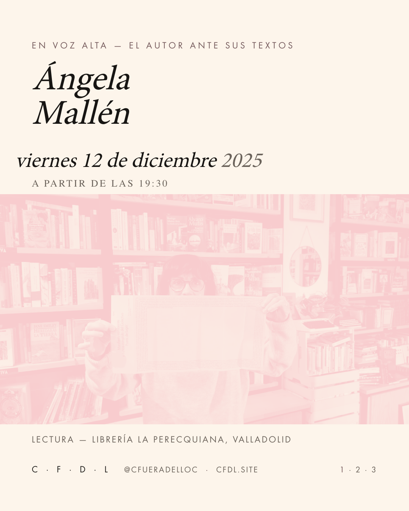
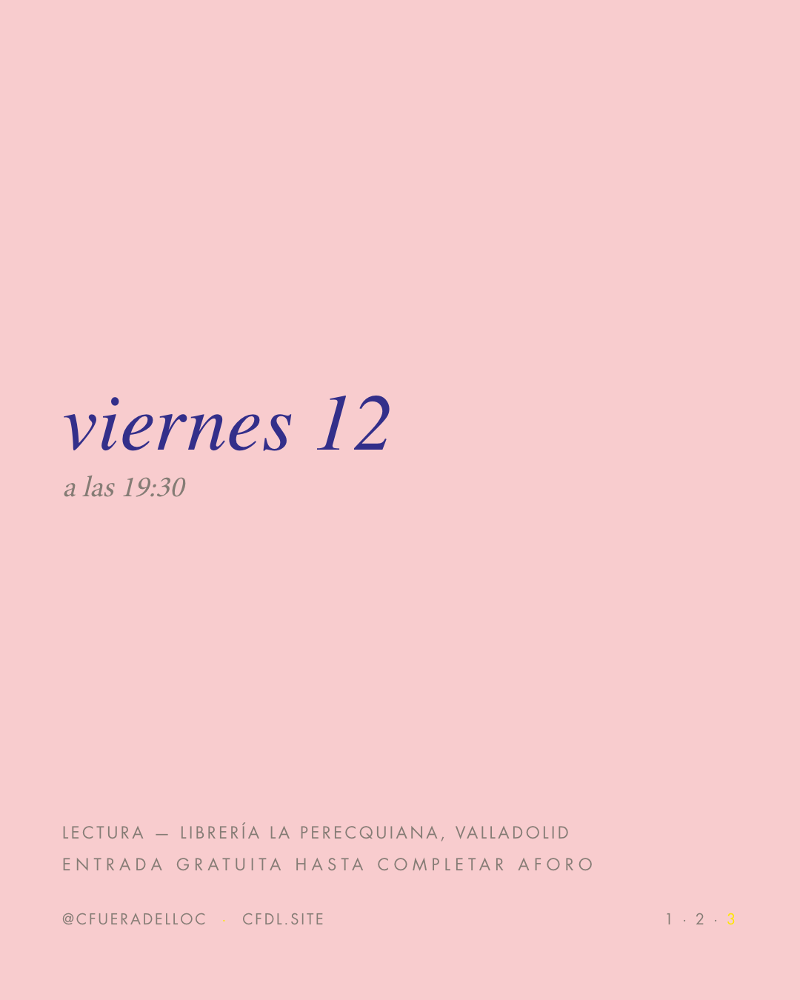
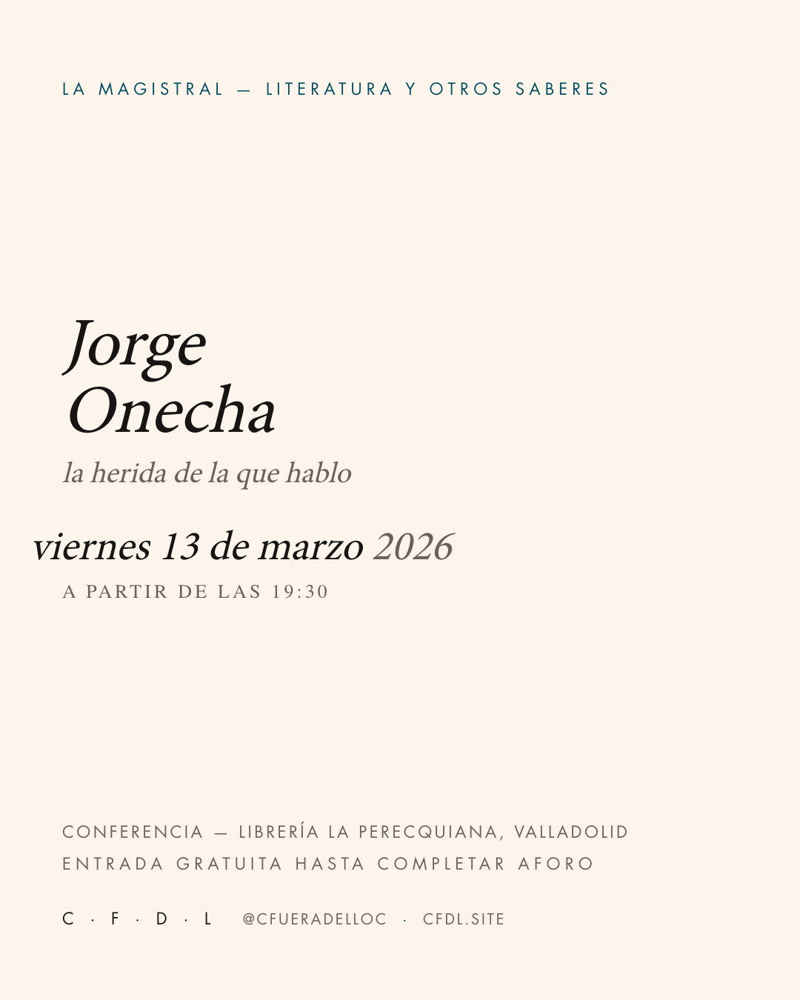

2025-10-08-ciclo-en-voz-alta
rosafeed 1080×1350cicloentrada · posts/2025-10-08-ciclo-en-voz-alta.json → slides[0]
{
"plantilla": "ciclo",
"superficie": "oscuro",
"ciclo": "en-voz-alta",
"marca_cfdl": "sigla",
"agenda": [
{
"dia": "miércoles",
"fecha": "8 oct",
"nombre": "Ana Griott"
},
{
"dia": "jueves",
"fecha": "13 nov",
"nombre": "Pablo Martín Sánchez"
},
{
"dia": "viernes",
"fecha": "12 dic",
"nombre": "Ángela Mallén"
}
],
"hora": {
"prefijo": "a partir de las",
"texto": "19:30"
},
"tipo": "Ciclo de lecturas",
"lugar": "perecquiana",
"aforo": "Entrada gratuita hasta completar aforo",
"alt": "Cartel del ciclo En voz alta con sus tres sesiones: Ana Griott, Pablo Martín Sánchez y Ángela Mallén."
}salida

out/2025-10-08-ciclo-en-voz-alta/01.png
salida · out/2025-10-08-ciclo-en-voz-alta/caption.txt — el texto de la publicación
Tres sesiones de otoño. Escritoras y escritores leen sus propios textos en voz alta y hablan de lo que los sostiene.
Ciclo de lecturas — Librería La Perecquiana, Valladolid
Miércoles 8 de octubre, jueves 13 de noviembre, viernes 12 de diciembre, 19:30
Entrada gratuita hasta completar aforo
cfdl.site
salida · out/2025-10-08-ciclo-en-voz-alta/alt.txt — texto alternativo por lámina
01: Cartel del ciclo En voz alta con sus tres sesiones: Ana Griott, Pablo Martín Sánchez y Ángela Mallén.
2025-12-12-angela-mallen
rosafeed 1080×1350eventoeventorecordatorioentrada · posts/2025-12-12-angela-mallen.json → slides[0]
{
"plantilla": "evento",
"ciclo": "en-voz-alta",
"marca_cfdl": "sigla",
"titular": [
"Ángela",
"Mallén"
],
"tipo": "Lectura",
"fecha": {
"dia_semana": "viernes",
"texto": "12 de diciembre",
"anio": "2025"
},
"hora": {
"prefijo": "a partir de las",
"texto": "19:30"
},
"lugar": "perecquiana",
"foto": {
"src": "docs/gallery/envozalta-angela-1.jpg",
"encuadre": "50% 34%",
"forma": "banda",
"tratamiento": "duo",
"contraste": 1.14
},
"alt": "Retrato de Ángela Mallén leyendo en La Perecquiana, en duotono zafiro y rosa."
}salida

out/2025-12-12-angela-mallen/01.png
entrada · posts/2025-12-12-angela-mallen.json → slides[1]
{
"plantilla": "evento",
"superficie": "oscuro",
"antetitulo": "en voz alta — el autor ante sus textos",
"subtitular": "susurros y atmósferas",
"bio": "Cierra el ciclo con una lectura de sus propios textos. Escribe desde la voz baja: la frase corta, el aire entre palabras, lo que se dice cuando nadie levanta el tono.",
"alt": "Texto sobre fondo zafiro: presentación de la sesión de Ángela Mallén."
}salida

out/2025-12-12-angela-mallen/02.png
entrada · posts/2025-12-12-angela-mallen.json → slides[2]
{
"plantilla": "recordatorio",
"titular": "viernes 12",
"subtitular": "a las 19:30",
"lugar": "perecquiana",
"tipo": "Lectura",
"aforo": "Entrada gratuita hasta completar aforo",
"alt": "Datos prácticos: viernes 12 de diciembre, 19:30, Librería La Perecquiana, Valladolid."
}salida

out/2025-12-12-angela-mallen/03.png
salida · out/2025-12-12-angela-mallen/caption.txt — el texto de la publicación
Cerramos «En voz alta» con Ángela Mallén. Lee sus textos en voz baja — susurros, atmósferas, el aire entre las frases.
Lectura — Librería La Perecquiana, Valladolid
Viernes 12 de diciembre, 19:30
Entrada gratuita hasta completar aforo
cfdl.site
salida · out/2025-12-12-angela-mallen/alt.txt — texto alternativo por lámina
01: Retrato de Ángela Mallén leyendo en La Perecquiana, en duotono zafiro y rosa.
02: Texto sobre fondo zafiro: presentación de la sesión de Ángela Mallén.
03: Datos prácticos: viernes 12 de diciembre, 19:30, Librería La Perecquiana, Valladolid.
2026-03-13-magistral-jorge-onecha
náufragofeed 1080×1350eventoentrada · posts/2026-03-13-magistral-jorge-onecha.json → slides[0]
{
"plantilla": "evento",
"ciclo": "la-magistral",
"marca_cfdl": "sigla",
"titular": [
"Jorge",
"Onecha"
],
"subtitular": "la herida de la que hablo",
"tipo": "Conferencia",
"fecha": {
"dia_semana": "viernes",
"texto": "13 de marzo",
"anio": "2026"
},
"hora": {
"prefijo": "a partir de las",
"texto": "19:30"
},
"lugar": "perecquiana",
"aforo": "Entrada gratuita hasta completar aforo",
"alt": "Cartel tipográfico sobre fondo niebla: Jorge Onecha, viernes 13 de marzo, 19:30."
}salida

out/2026-03-13-magistral-jorge-onecha/01.png
salida · out/2026-03-13-magistral-jorge-onecha/caption.txt — el texto de la publicación
Jorge Onecha se acerca a la figura de Jesús en la obra de Leonard Cohen. Liturgia, música y literatura — el vinilo y la lectura en voz alta.
Conferencia — Librería La Perecquiana, Valladolid
Viernes 13 de marzo, 19:30
Entrada gratuita hasta completar aforo
cfdl.site
salida · out/2026-03-13-magistral-jorge-onecha/alt.txt — texto alternativo por lámina
01: Cartel tipográfico sobre fondo niebla: Jorge Onecha, viernes 13 de marzo, 19:30.
cita-extenuacion
ámbarfeed 1080×1350citaentrada · posts/cita-extenuacion.json → slides[0]
{
"plantilla": "cita",
"superficie": "oscuro",
"marca_cfdl": "nombre",
"cita": {
"texto": "Buscamos la extenuación: de la palabra, de los recursos, de la energía corporal",
"fuente": "Manifiesto — Colectivo Fuera de Lugar"
},
"alt": "Fragmento del manifiesto sobre fondo medianoche: «Buscamos la extenuación: de la palabra, de los recursos, de la energía corporal»."
}salida

out/cita-extenuacion/01.png
salida · out/cita-extenuacion/caption.txt — el texto de la publicación
Buscamos la extenuación: de la palabra, de los recursos, de la energía corporal.
Del manifiesto, 2023.
cfdl.site
salida · out/cita-extenuacion/alt.txt — texto alternativo por lámina
01: Fragmento del manifiesto sobre fondo medianoche: «Buscamos la extenuación: de la palabra, de los recursos, de la energía corporal».